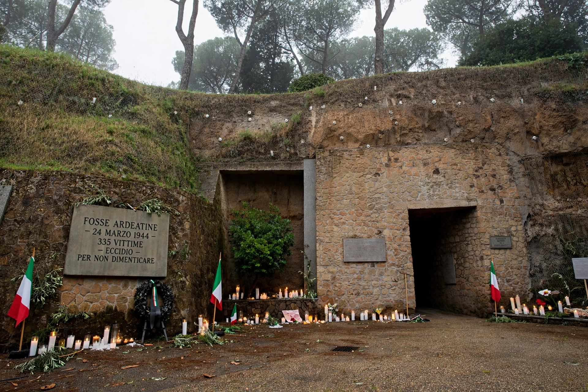

The Ardeatine massacre (Italian: Eccidio delle Fosse Ardeatine) was a mass killing in Rome on 24 March 1944, during the German occupation of Italy in World War II. 335 Italian prisoners and civilians were shot by German forces in the Ardeatine Caves in reprisal for a partisan attack.

| Ardeatine massacre | |
|---|---|
| Date | 24 March 1944 |
| Location | Ardeatine Caves, Rome, Italy |
| Victims | 335 killed |
| Perpetrators | SS, led by Herbert Kappler; Erich Priebke, Karl Hass |
On 23 March 1944, Italian partisans of the Gruppi di Azione Patriottica detonated a bomb in Via Rasella against a column of the SS Police Regiment Bozen, killing 33 German policemen. Adolf Hitler ordered a reprisal at a ratio of ten Italians for each German killed.
SS chief Herbert Kappler compiled lists of prisoners already condemned, political prisoners, Jews and civilians rounded up nearby. Victims were taken in groups of five into the caves on Via Ardeatina, shot in the back of the neck, and the entrances were then dynamited to hide the bodies. 335 died — five more than the 330 ordered.
The site became the Mausoleo delle Fosse Ardeatine, a national memorial and cemetery. Kappler was convicted in 1948 and died in prison. Erich Priebke, extradited from Argentina in 1995, was convicted in 1998 and died under house arrest in 2013 aged 100.